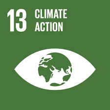
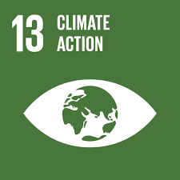

The Problem
Water pollution and waste mismanagement threaten marine ecosystems and public health. Each year, around 12 million tonnes of plastic enter the oceans, harming marine life and disrupting food chains. This pollution reduces biodiversity and affects vulnerable species like coral reefs. Coastal communities face economic losses from declining tourism and fishing, alongside public health risks. To address these challenges, raising awareness, implementing effective waste management, and fostering collaboration among NGOs, governments, and businesses are essential for a sustainable future for our oceans and rivers.
Our Objectives
- Raise Awareness: Educate the public about the impacts of water pollution and the importance of marine conservation through campaigns and educational materials.
- Promote Community Engagement: Encourage community participation in cleanup drives and environmental initiatives to foster a sense of responsibility toward marine ecosystems.
- Develop Sustainable Practices: Advocate for sustainable waste management practices among individuals, businesses, and local governments to minimize plastic and waste pollution.
- Support NGOs and Initiatives: Collaborate with and support non-governmental organizations focused on marine conservation and cleanup efforts, providing resources and visibility to their work.
- Implement Technology Solutions: Explore and promote innovative technologies for waste collection, recycling, and monitoring water quality to enhance environmental protection efforts.
- Conduct Research: Facilitate research initiatives to gather data on the impact of pollution on marine life and ecosystems, informing future conservation strategies.
- Encourage Responsible Consumption: Promote responsible consumer behavior by educating individuals on the importance of reducing plastic usage and choosing eco-friendly products.
- Establish Partnerships: Foster partnerships between local communities, businesses, and government entities to create a collaborative approach to tackling water pollution and conserving marine resources.
Sustainable Development Goals (SDGs)
Our project aligns with the following SDGs: Life Under Water, Responsible Consumption and Production, and Climate Action.
 
